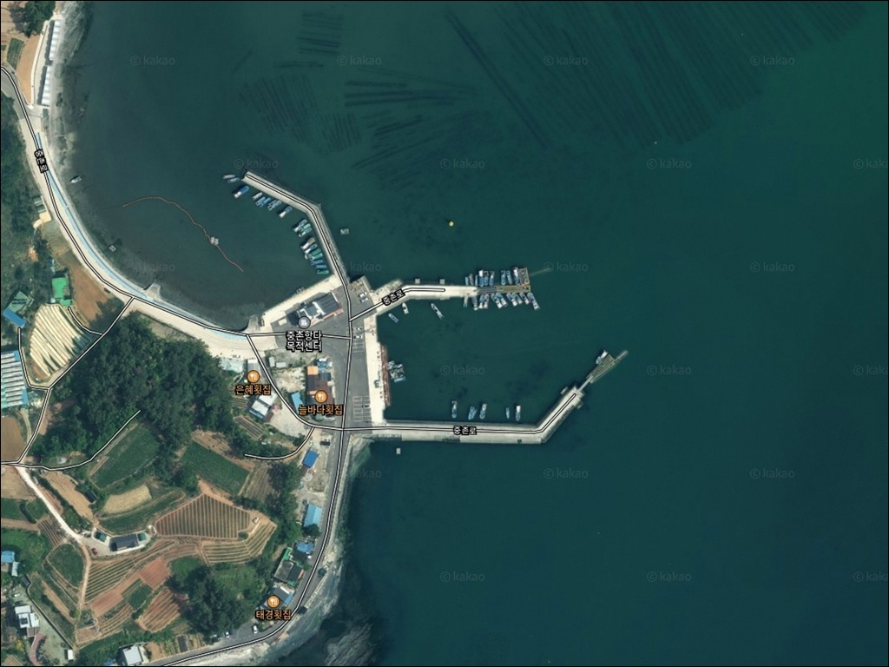
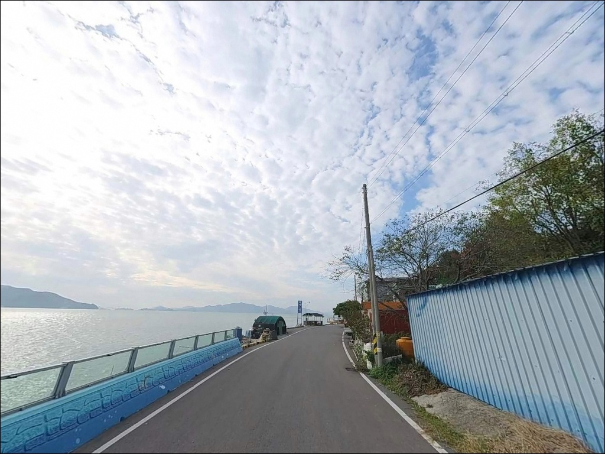
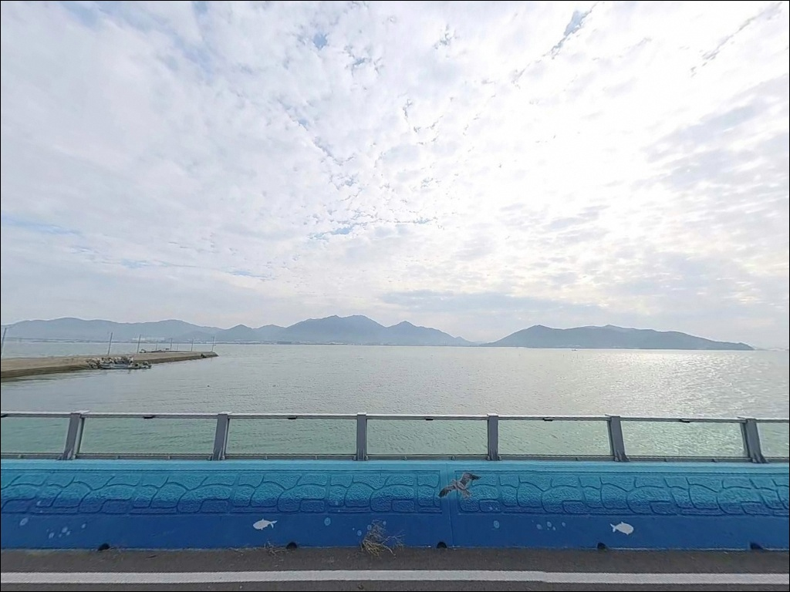
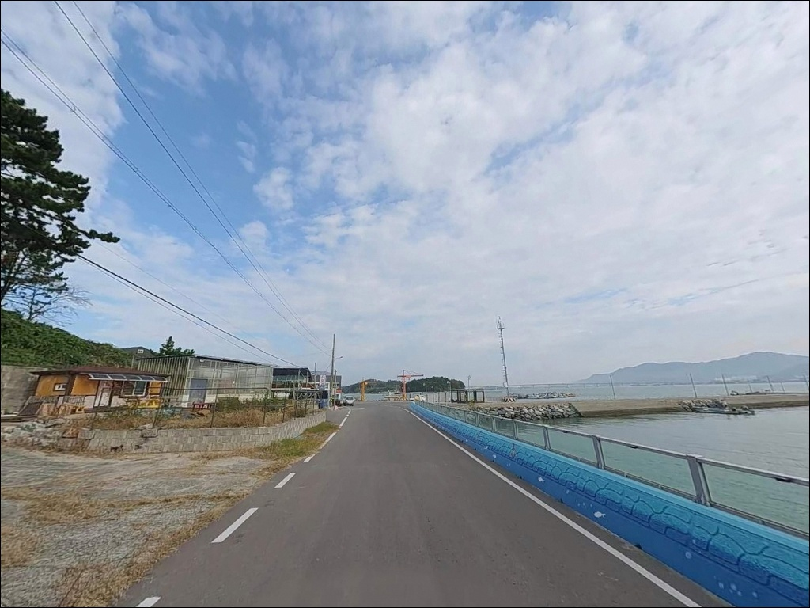
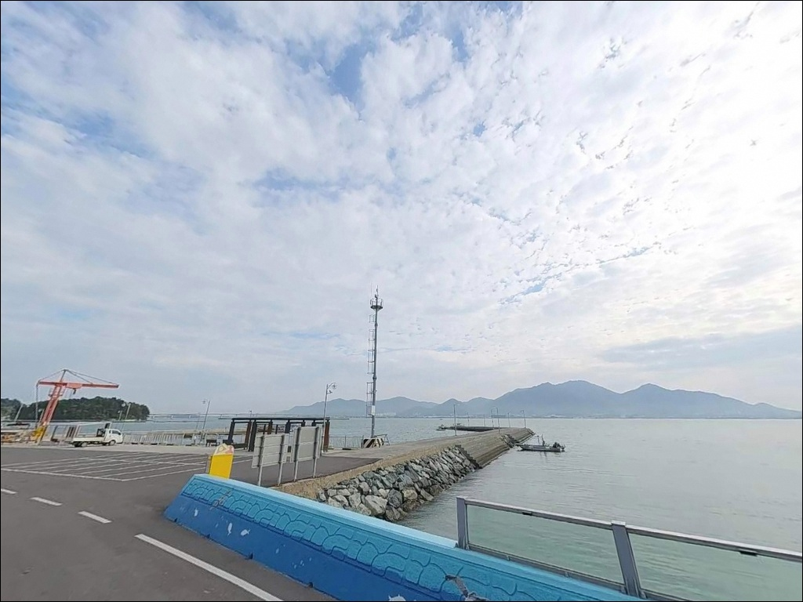
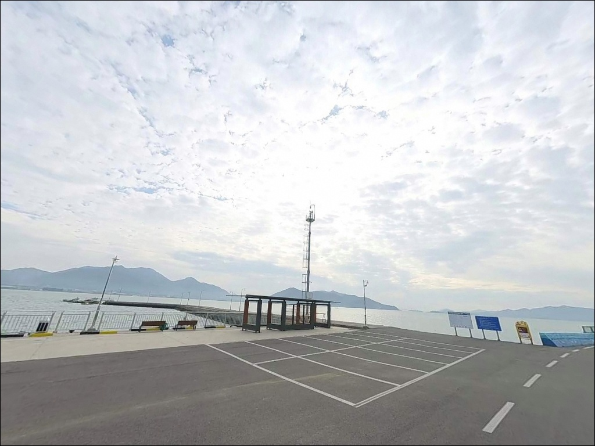
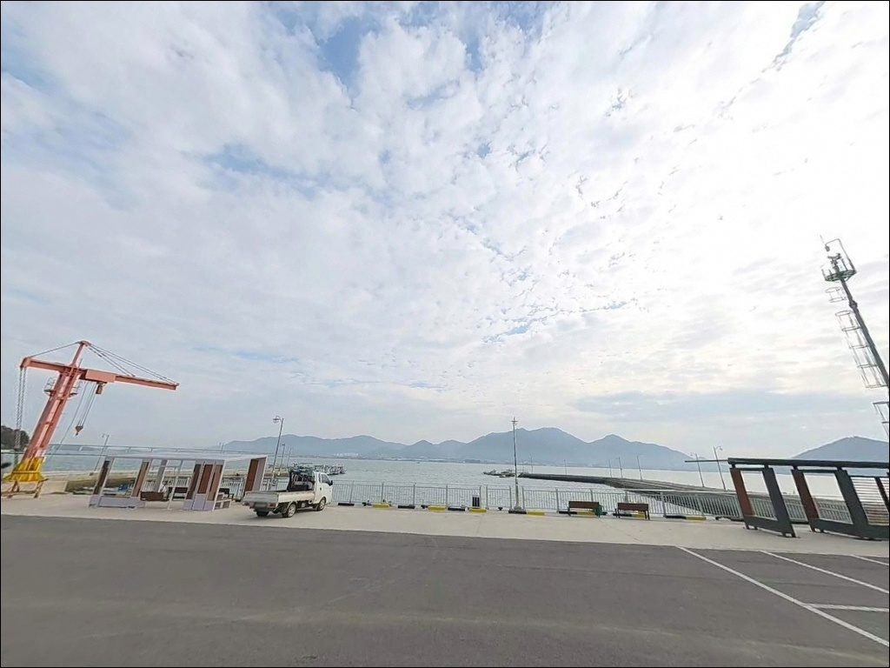
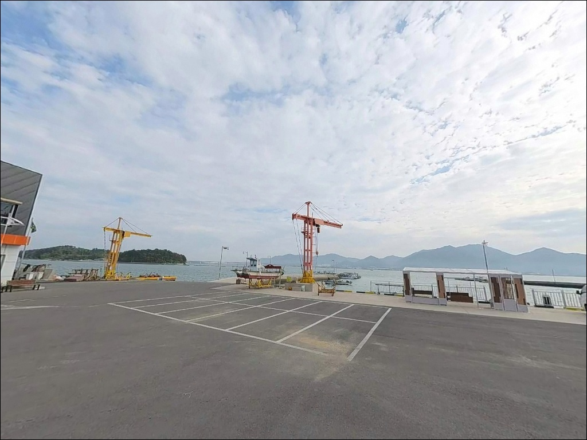
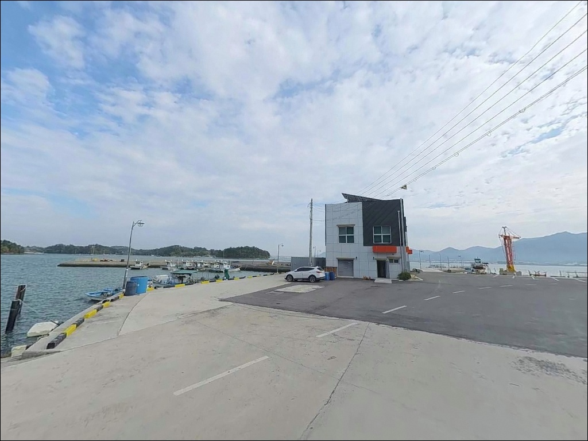

간조면 갯벌 드러나는 사천 중촌항, 만조 전후 2시간에 터진 입질
이 페이지에는 광고(제휴 링크 포함)가 있으며, 광고 링크를 통해 구매하면 운영자가 판매 수익 또는 수수료를 받을 수 있습니다. 포인트 사진: 카카오맵 스카이뷰·로드뷰. 이 페이지의 지도·사진 이미지는 카카오맵의 실제 서비스 이미지와 다를 수 있습니다.


포인트 안내
중촌항
경남 사천시 서포면 자혜리 908-26
사천만 내만이라고 얕게 보고 물때 확인 없이 찾아가면
간조 시 방파제 주변 갯벌이 넓게 드러나
제대로 된 낚시 자리를 잡기 어렵습니다.
이 포인트에서 가장 먼저 판단해야 할 것은
수심이 아니라 조석 타이밍입니다.
중촌항은 사천만 서안, 서포면 자혜리에 자리한
어촌정주어항입니다.
선착장 135m, 물량장 67m를 갖춘 소형 관리형 항구로,
방파제와 내항 선착장이 안정된 구조를 이루고 있습니다.
어촌뉴딜300사업 및 어촌신활력증진사업 대상으로 선정되어
2027년까지 항만 시설 정비가 진행 중입니다.
이 글은 중촌항의 진입 환경, 차박 여건,
지형 기반 낚시 방식 적합성에 집중합니다.
조황 단정이나 특정 어종 보장은
이 글의 범위에 포함되지 않습니다.

1. 진입 동선과 차량 접근 조건
중촌항은 중촌로를 통해 접근합니다.
서포면 내륙부에서 해안을 따라 자혜리 방향으로 이어지는
이 도로는 폭 6~7m 수준으로,
승용차와 소형 SUV는 교행이 가능한 구조입니다.
항 입구까지는 포장도로가 연결되어 있으며
급경사 구간은 없습니다.
항 내부 선착장 주변에 회차 공간이 확보되어 있어
대형 SUV도 방향 전환에 큰 어려움은 없습니다.
다만 대형 캠핑카는 마지막 진입 구간에서
차폭 여유가 넉넉하지 않을 수 있어
위성지도로 진입로를 사전에 확인하는 것이
안전합니다.
주차는 방파제 기부 인근 공터와
선착장 주변 도로변 공간을 이용합니다.
어업 작업 차량과 동선이 겹칠 수 있으므로
어선 계류 시설과 물량장 앞은 피해
자리를 잡는 것이 기본입니다.

2. 차박 환경과 야간 체류 여건
중촌항은 민가가 인접한 소형 어촌 항구로
야간에는 가로등이 일부 설치되어 있어
완전 암흑 환경은 아닙니다.
야간 차량 통행이 적고 마을 밀집도가 낮아
조용하고 안정적인 체류 분위기를 갖추고 있습니다.
사천만 내만 구조상 파도 영향이 적고
외해 노출이 제한적이라
바람 세기도 외해 포인트에 비해 안정된 편입니다.
다만 남풍 계열 바람이 불 때는
항 전면으로 바람이 직접 들어오는 구조이므로
기상 예보 확인은 기본 준비 사항입니다.
차박을 메인으로 삼기 위해서는
주차 공간이 좁다는 점을 사전에 고려해야 합니다.
선착장 주변은 어업 활동 공간과 혼용되므로
새벽 출어 시간대 동선을 방해하지 않는
자리 선택이 전제입니다.


3. 주변 편의시설 및 인프라 현황
중촌항 주변에는 편의점이나 식당을 기대하기 어렵습니다.
서포면 소재지까지 3~4km 거리에
소형 마트와 주유소가 있으며,
면소재지 수준의 기본 인프라가 갖춰져 있습니다.
출발 전 식수·얼음·낚시 소품을 미리 챙겨
완전 자급 체제로 진입하는 것이 현실적인 방식입니다.
반경 10km 이내에는 삼천포(사천 도심)가 위치해
24시간 편의점·병원·주유소 등
응급 자원을 이용할 수 있습니다.
남해고속도로 곤양IC도 서포면에서 10km 내외로,
긴급 상황 발생 시 접근이 가능합니다.
항 자체에는 어민 작업용 계류 시설이 있으며,
어촌신활력증진사업 진행 중으로
2027년까지 항만 시설과 공공 편의 여건이
추가 정비될 예정입니다.

4. 낚시 자리가 사라지기 전에 확인해야 할 준비 사항
중촌항 방문에서 가장 먼저 확인해야 할 것은
바다타임 기준 사천만 물때입니다.
사천만 내만은 조수간만의 차가 큰 지역으로
간조 시 방파제 주변 갯벌이 넓게 드러납니다.
만조 전후 2~3시간이 낚시 효율이 가장 높은 구간이며,
이 타이밍을 놓치면 공략 가능한 수심 자체가 사라집니다.
기상청 해상 예보와 바다타임 물때 확인을
출발 당일 아침에 다시 한번 점검하는 것이
헛걸음을 막는 기본 루틴입니다.
사천만 내만이라도 야간에는 파도 이외의
낙수 사고 위험이 동일하게 존재하므로
구명조끼와 헤드랜턴은 필수입니다.
항 내부는 어업인의 작업 공간이라
어구·선박 계류 시설을 방해하지 않는 자리 선택이
기본 매너입니다.
채비 손실 발생을 대비해 여분 채비를 충분히 준비하고,
낚싯줄·봉돌·바늘 등 소모품은
귀가 시 반드시 수거해야 합니다.
출조 전 서포면 일대 최신 조황 검색을
먼저 해두는 편이 좋습니다.

5. 지형 기반 낚시 여건 분석
중촌항은 사천만 리아스식 내만 안쪽에 위치한 구조로
외해 파도 차단 효과가 큰 편입니다.
항 전체가 만 안쪽에 자리해 조류 흐름이 완만하며,
내항 수역은 뻘과 모래가 섞인 바닥으로
밑걸림이 상대적으로 적습니다.
내항 수역은 간조 시 수심이 크게 낮아지는 편이며,
외항 방파제 끝단에서 항 입구 수로 방향으로는
수심이 급격히 깊어지는 구조를 이룹니다.
이 수로 경계선이 원투와 찌낚시의 핵심 공략 라인이며,
만조 전후에 어종이 몰리는 구간이기도 합니다.
방파제 기부 주변 석축은 볼락류가 은신하기 좋은
구조물 지형을 갖추고 있으며,
사천만 내만 소형항 특성상 계절에 따라
볼락·숭어·전어·도다리 계열이 방파제 주변을
접근하는 패턴이 이 일대 해역의 공통적인 성격입니다.
출조 전 중촌항 또는 서포면 방파제 낚시 조황을
반드시 먼저 검색해 두시기 바랍니다.


6. 포인트 지형에 맞는 낚시 스타일
이 포인트에서 가장 지형과 잘 맞는 방식은
원투낚시입니다.
방파제 외항 방향으로 채비를 멀리 보내면
항 입구 수로 라인의 수심 급변 구간을
노릴 수 있으며,
뻘·모래 바닥에서 기대할 수 있는 어종을
바닥층에서 공략하는 방식에 적합합니다.
찌낚시는 방파제 외항 쪽 콧부리와
방파제 기부 주변을 집중 공략하는 방식으로
이 포인트 구조와 잘 어울립니다.
조류가 완만한 내만 지형에서
찌 컨트롤이 비교적 수월한 편이며,
만조 전후 조류가 살아있는 시간대에
가장 효율이 높습니다.
볼락 라이트게임은 야간에 노려볼 수 있습니다.
방파제 기부 석축과 구조물 사이는
볼락이 은신하기 좋은 지형 조건을 갖추고 있으며,
소형 지그헤드 채비로 내항 경계 라인과
방파제 틈을 천천히 탐색하는 방식이
이 포인트에 어울립니다.
가로등 주변은 야간 볼락 라이트게임 핵심 자리입니다.

7. 대안 포인트와 플랜 B 동선
중촌항 조류가 여의치 않거나
주차 공간이 부족할 때
첫 번째 대안은 구우진항입니다.
중촌항에서 1~2km 거리의 동일 자혜리 내 항구로,
어촌뉴딜300사업으로 방파제 172m·선착장 47m가
정비된 시설형 소형 어항입니다.
해역 조건이 동일해 비슷한 낚시 패턴을 기대할 수 있습니다.
서포면 내 3~5km 거리에는 갯섬항이 있습니다.
2025년 어촌뉴딜300사업이 준공된 항으로
방파제와 해안 접근 인프라를 갖추고 있어
중촌항과 묶어서 탐색하는 동선에 활용하기 좋습니다.
반경 10km 이내에는 비토해양낚시공원이 있습니다.
135m 낚시잔교와 운영 요원, 구명 장비를 갖춘
유료 시설(성인 2만 원)로,
중촌항 여건이 기대에 못 미칠 때
안정적인 대안 낚시 공간으로 활용할 수 있습니다.
주소는 사천시 서포면 별학길 49입니다.

물때 한 번 맞추면
중촌항이 달라 보입니다
조류가 느린 내만이라고 물때를 가볍게 보면
간조 때 방파제 앞이 갯벌로 바뀌는 상황을
맞닥뜨리게 됩니다.
반대로 만조 전후 타이밍을 맞춰 들어서면
항 입구 수로 라인이 살아나고
원투와 찌낚시 모두 힘을 발휘할 수 있는
지형 조건이 갖춰집니다.
원투낚시와 찌낚시를 주력으로 하면서
야간 볼락 라이트게임을 병행하고 싶은
낚시인에게 잘 맞는 포인트입니다.
시설 정비가 진행 중인 관리형 어항으로
접근성이 안정적이며,
편의시설 없는 완전 자급 체제와 물때 판단만
준비되면 조용하고 효율적인 출조가 됩니다.
사천만 서안의 조용한 어촌 항구에서
하룻밤 낚시를 즐기고 싶은 차박 낚시인이라면,
물때와 자리 선택만 맞으면
기억에 남을 출조가 될 수 있는 포인트입니다.